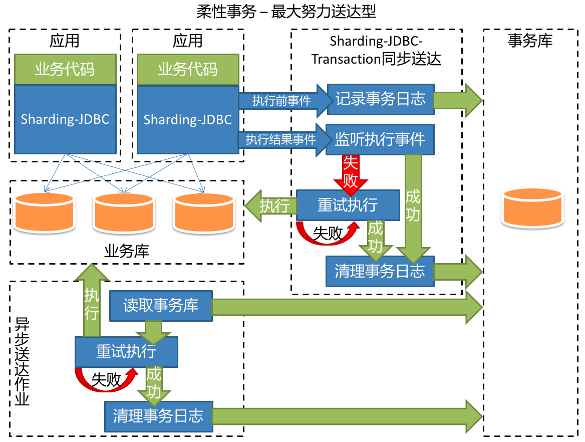

在分布式数据库的场景下，相信对于该数据库的操作最终一定可以成功，所以通过最大努力反复尝试送达操作。

使用最大努力送达型柔性事务的SQL需要满足幂等性。
UPDATE xxx SET x=x+1Sharding-JDBC-transaction完全基于java开发，直接提供jar包，可直接使用maven导入坐标即可使用。Sharding-JDBC-transaction需要提供数据库存储事务日志，配置方法可参见事务管理器配置项。Zookeeper。Sharding-JDBC-transaction采用elastic-job实现的Sharding-JDBC-transaction-async-job，通过简单配置即可启动高可用作业异步送达柔性事务，启动脚本为start.sh。Sharding-JDBC-transaction提供了基于内存的事务日志存储器和内嵌异步作业。 // 1. 配置SoftTransactionConfiguration
SoftTransactionConfiguration transactionConfig = new SoftTransactionConfiguration(dataSource);
transactionConfig.setXXX();
// 2. 初始化SoftTransactionManager
SoftTransactionManager transactionManager = new SoftTransactionManager(transactionConfig);
transactionManager.init();
// 3. 获取BEDSoftTransaction
BEDSoftTransaction transaction = (BEDSoftTransaction) transactionManager.getTransaction(SoftTransactionType.BestEffortsDelivery);
// 4. 开启事务
transaction.begin(connection);
// 5. 执行JDBC
/*
codes here
*/
*
// 6.关闭事务
transaction.end();
SoftTransactionConfiguration配置用于配置事务管理器。
| 名称 | 类型 | 必填 | 默认值 | 说明 |
|---|---|---|---|---|
| shardingDataSource | ShardingDataSource | 是 |
事务管理器管理的数据源 | |
| syncMaxDeliveryTryTimes | int | 否 | 3 | 同步的事务送达的最大尝试次数 |
| storageType | enum | 否 | RDB | 事务日志存储类型。可选值: RDB,MEMORY。使用RDB类型将自动建表 |
| transactionLogDataSource | DataSource | 否 | null | 存储事务日志的数据源，如果storageType为RDB则必填 |
| bestEffortsDeliveryJobConfiguration | NestedBestEffortsDeliveryJobConfiguration | 否 | null | 最大努力送达型内嵌异步作业配置对象。如需使用，请参考NestedBestEffortsDeliveryJobConfiguration配置 |
NestedBestEffortsDeliveryJobConfiguration配置 (仅开发环境)用于配置内嵌的异步作业，仅用于开发环境。生产环境应使用独立部署的作业版本。
| 名称 | 类型 | 必填 | 默认值 | 说明 |
|---|---|---|---|---|
| zookeeperPort | int | 否 | 4181 | 内嵌的注册中心端口号 |
| zookeeperDataDir | String | 否 | target/test_zk_data/nano/ | 内嵌的注册中心的数据存放目录 |
| asyncMaxDeliveryTryTimes | int | 否 | 3 | 异步的事务送达的最大尝试次数 |
| asyncMaxDeliveryTryDelayMillis | long | 否 | 60000 | 执行异步送达事务的延迟毫秒数，早于此间隔时间的入库事务才会被异步作业执行 |
Zookeeper。yaml文件,参照示例。sharding-jdbc-transaction-async-job-$VERSION.tar，通过start.sh脚本启动异步作业。#目标数据库的数据源.
targetDataSource:
ds_0: !!org.apache.commons.dbcp.BasicDataSource
driverClassName: com.mysql.jdbc.Driver
url: jdbc:mysql://localhost:3306/ds_0
username: root
password:
ds_1: !!org.apache.commons.dbcp.BasicDataSource
driverClassName: com.mysql.jdbc.Driver
url: jdbc:mysql://localhost:3306/ds_1
username: root
password:
#事务日志的数据源.
transactionLogDataSource:
ds_trans: !!org.apache.commons.dbcp.BasicDataSource
driverClassName: com.mysql.jdbc.Driver
url: jdbc:mysql://localhost:3306/trans_log
username: root
password:
#注册中心配置
zkConfig:
#注册中心的连接地址
connectionString: localhost:2181
#作业的命名空间
namespace: Best-Efforts-Delivery-Job
#注册中心的等待重试的间隔时间的初始值
baseSleepTimeMilliseconds: 1000
#注册中心的等待重试的间隔时间的最大值
maxSleepTimeMilliseconds: 3000
#注册中心的最大重试次数
maxRetries: 3
#作业配置
jobConfig:
#作业名称
name: bestEffortsDeliveryJob
#触发作业的cron表达式
cron: 0/5 * * * * ?
#每次作业获取的事务日志最大数量
transactionLogFetchDataCount: 100
#事务送达的最大尝试次数.
maxDeliveryTryTimes: 3
#执行送达事务的延迟毫秒数,早于此间隔时间的入库事务才会被作业执行
maxDeliveryTryDelayMillis: 60000
开发中…